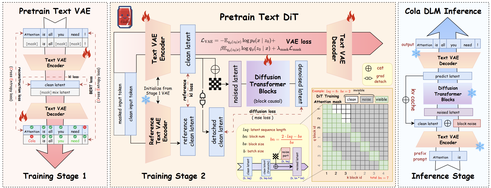

Notes on generative models, multimodal learning, and research ideas.

An exploration of unified text-vision modeling with Cola DLM, using continuous latent spaces and a shared block-causal MMDiT for understanding and generation.